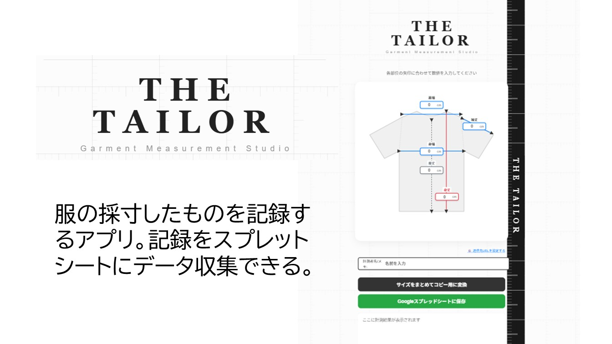
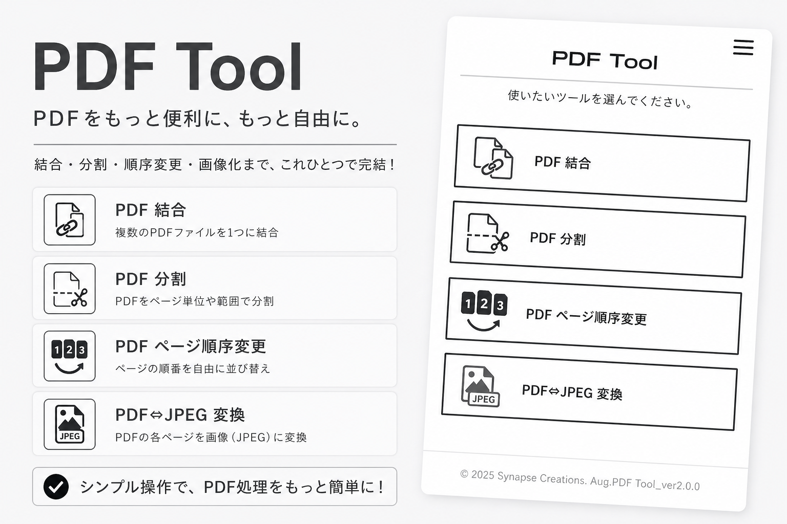
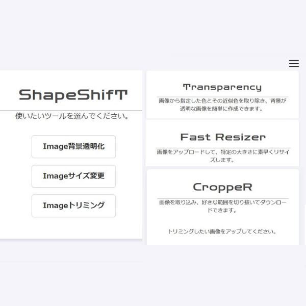
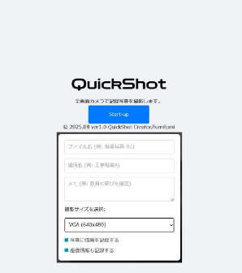
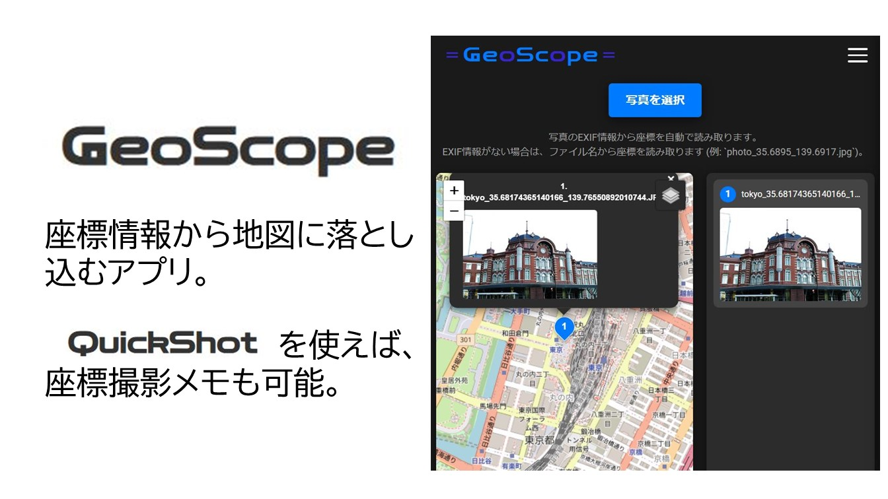
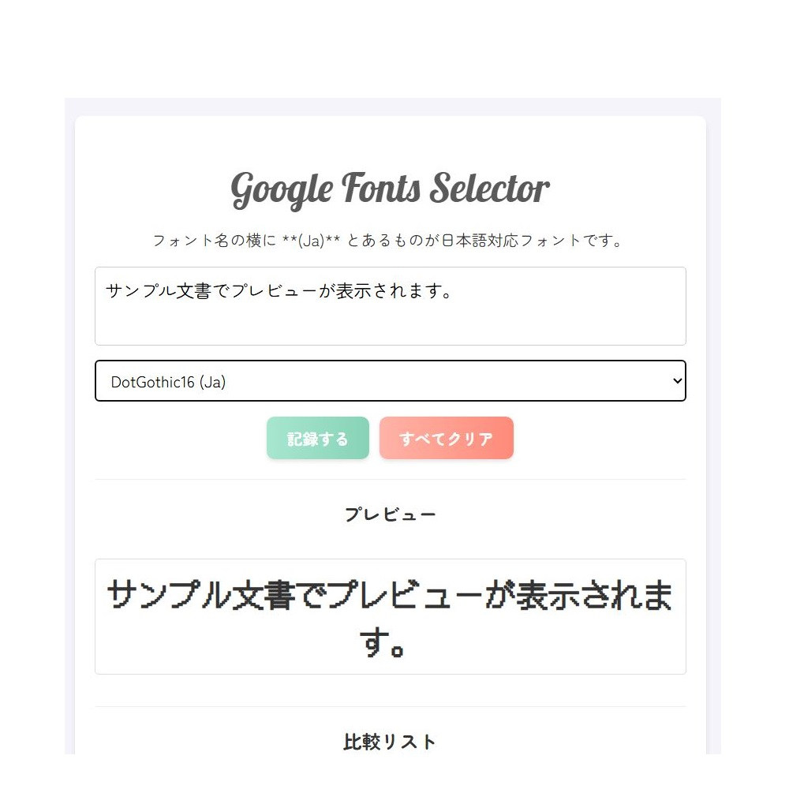
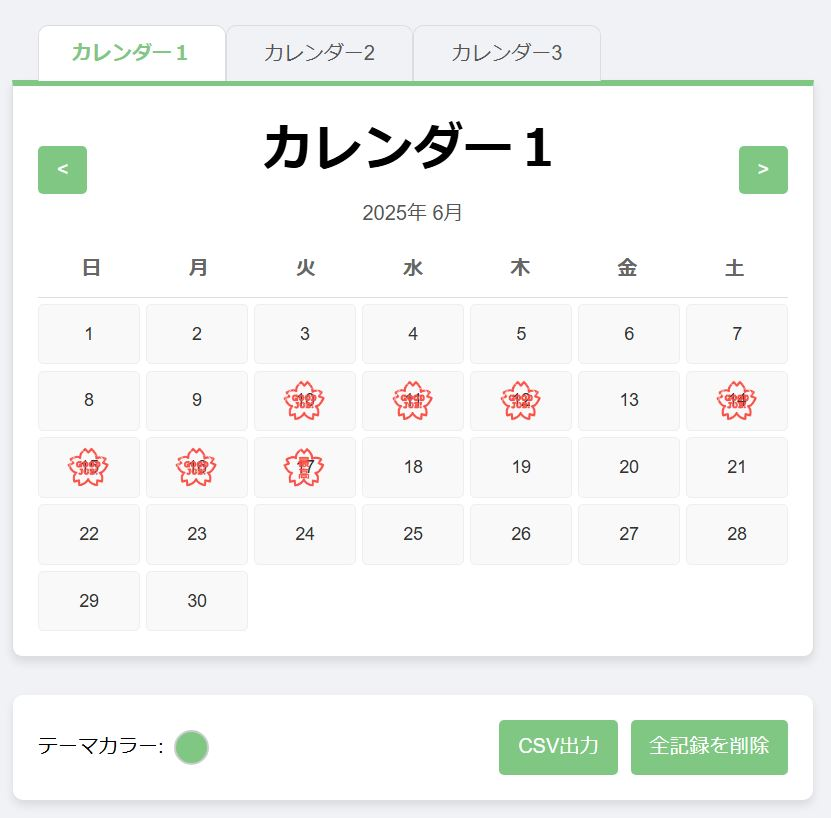

🛠️TOOLNEW!


Celestial Compass
生年月日と旅立つ日から、吉方位をわかりやすく確認できるWebアプリ。
→ 🛠️TOOLNEW!Celestial Tarot
生年月日と今日の日付から導く、1日1枚のタロット占い。
→ 🛠️TOOLNEW!GraffitiStudio
画像生成AI用のプロンプト作成ツール。
→ 🛠️TOOLUPDATE
THE Tailor
洋服採寸を入力し、データ蓄積できます。
→ 🛠️TOOLUPDATESUDOKU AI
ナンプレを解析し解答を出力するアプリ。
パズルゲームもできます。
QR.create
オリジナルQRコード作成アプリ。
ロゴや配色を自由に作成できます。

PDF Tool
簡易的なPDF編集ツール。
PDFを結合、分割、ページ入れ替え、JPG変換ができます。

ShapeShifT
簡易的な画像編集ツール。
背景を透明化、リサイズ、トリミング、PDF変換ができます。

QuickShot
現場の記録写真を撮る際に、その場で写真名、場所、メモ、座標を撮影写真に直接書き込むアプリ。
→ 🛠️TOOL
GeoScope
QuickShotで撮影した座標情報がある写真を地図に落とし込むアプリ。
→ 🛠️TOOL
Google Fonts Selecter
GoogleFontを実際に確認しながら比較できるものです。サイト作成時に活躍。
→ 🛠️TOOLUPDATE
Clear Caendar
単純にその日に達成を記録する簡単アプリです。タイトル・色を自由に変更可能。日付もCSV出力可。
→